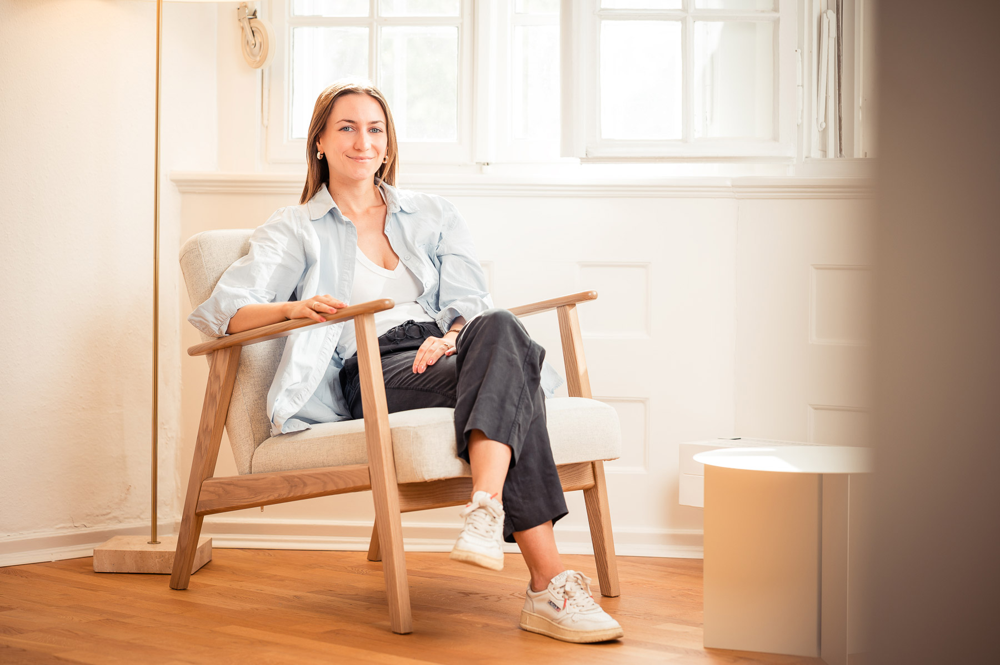
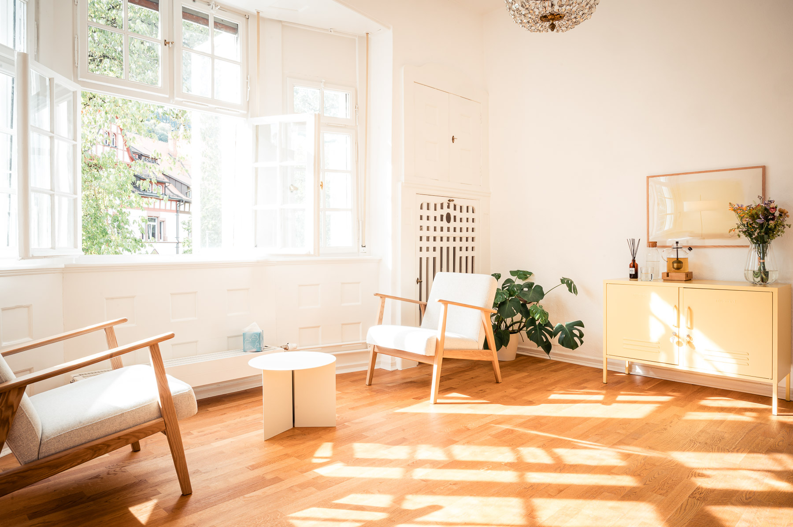

Herzlich Willkommen in meiner Privatpraxis in Freiburg-Herdern!
Praxis für Psychotherapie
M.Sc. Psych. Jule Schröder
Als approbierte Verhaltenstherapeutin mit eigener Privatpraxis begleite ich Sie gerne durch schwierige Phasen Ihres Lebens, mit Klarheit, Empathie und fachlicher Erfahrung. In meiner Arbeit verbinde ich die Methoden der kognitiven Verhaltenstherapie mit achtsamkeits- und emotionsbasierten Ansätzen. Mir ist dabei wichtig, nicht nur auf Symptome zu schauen, sondern Sie als ganzen Menschen wahrzunehmen, mit all Ihren Gedanken, Gefühlen, Erfahrungen und Werten.
Gemeinsam nehmen wir uns die Zeit, zu verstehen, wie Ihre aktuellen Belastungen entstanden sind und was sie aufrechterhält, stets im Zusammenhang mit Ihrer persönlichen Lebensgeschichte. Darauf aufbauend entwickeln wir gemeinsam Strategien und neue Wege, die Ihnen helfen, wieder mehr Einfluss und Handlungsspielraum in Ihrem Alltag zu gewinnen.
Ein geschützter Rahmen, Vertrauen und eine wertschätzende Beziehung auf Augenhöhe sind für mich die Basis jeder guten Zusammenarbeit. Sie sind bei mir herzlich willkommen, ganz gleich, welche Geschichte, Identität oder Lebenssituation Sie mitbringen.
Behandlungsschwerpunkte
Ich begleite Erwachsene bei psychischen Erkrankungen, seelischen Belastungen, persönlichen Krisen sowie Entwicklungs- und Veränderungsprozessen. Zu meinem Behandlungsspektrum gehören unter anderem:
*Bei AD(H)S und Autismus-Spektrum-Störungen biete ich auch die diagnostische Abklärung an.

Mein Behandlungsraum im Haus FortwänglerIch bin M.Sc. Psychologin und approbierte Psychologische Psychotherapeutin mit Fachkunde im Richtlinienverfahren Verhaltenstherapie. Nach meinem Psychologiestudium an den Universitäten Fribourg und Basel in der Schweiz zog es mich zurück in meine Heimat Freiburg, wo ich meine Ausbildung zur Psychologischen Psychotherapeutin absolviert habe.
Qualifikationen
- Ausbildung zur Psychologischen Psychotherapeutin (Verhaltenstherapie für Erwachsene) am Freiburger Ausbildungsinstitut für Verhaltenstherapie (FAVT)
- Zusatzcurriculum für Verhaltenstherapie in Gruppen, FAVT
- Zusatzcurriculum für Entspannungsverfahren, Hypnose und hypnotherapeutische Verfahren, FAVT
Klinische Erfahrungen
- Klinik für Psychiatrie und Psychotherapie, Universitätsklinikum Freiburg
- Psychosomatische Fachklinik Gengenbach
- Psychotherapeutische Ambulanz für psychische Störungen, Psychologisches Institut der Universität Freiburg
Damit Sie wissen, was Sie erwartet, hier ein Überblick über Ablauf und Kostenregelung.
Ablauf
In einem unverbindlichen Erstgespräch können Sie mir Ihr Anliegen schildern sowie einen persönlichen Eindruck gewinnen. Anschließend gebe ich Ihnen eine erste fachliche Einschätzung sowie einen Überblick über mögliche Behandlungswege und meine Arbeitsweise. In den bis zu fünf folgenden probatorischen Sitzungen nehmen wir uns Zeit, Ihr Anliegen genauer zu verstehen, gemeinsam Ziele zu entwickeln und die Behandlung zu planen. Zugleich haben Sie die Möglichkeit herauszufinden, ob Sie sich in den Gesprächen wohlfühlen und sich eine Zusammenarbeit mit mir vorstellen können. Danach entscheiden wir gemeinsam, ob eine Verhaltenstherapie beantragt werden soll und in welchem Umfang (als Kurzzeittherapie mit 24 oder Langzeittherapie mit 60 Sitzungen). Die Sitzungen finden in der Regel einmal wöchentlich statt und dauern jeweils 50 Minuten.
Kostenübernahme
Als Privatpraxis rechne ich hauptsächlich mit privaten Krankenversicherungen und der Beihilfe ab. Klären Sie daher am besten schon vor Beginn der Therapie mit Ihrer Versicherung, in welchem tariflichen Umfang die Kosten übernommen werden.
Bei gesetzlich Krankenversicherten kann eine Abrechnung aktuell ausschließlich im Rahmen eines Kostenerstattungsverfahrens erfolgen. Bitte informieren Sie sich dazu bei Ihrer Krankenkasse.
Auf Wunsch können Sie die Kosten einer psychotherapeutischen Behandlung auch selbst übernehmen. Dieser Weg steht sowohl gesetzlich als auch privat Versicherten offen. Dabei besteht kein Austausch mit der Krankenkasse.
Abrechnung
Grundlage der Abrechnung ist die Gebührenordnung für Psychotherapeutinnen und Psychotherapeuten (GOP). Je nach Art der Sitzung (Sprechstunde, probatorische Sitzung, Kurzzeittherapie oder Langzeittherapie) liegt der Satz für 50 Minuten zwischen 100,55 € und 167,58 €.
Privatpraxis für Psychotherapie
M.Sc. Psych. Jule Schröder
Psychologische Psychotherapeutin
- ⌂PraxisHaus Fortwängler
Stadtstraße 43
79104 Freiburg im Breisgau - ☎Telefon0157 53739595
- ✉
Bitte geben Sie in Ihrer Nachricht Ihren Namen, Ihre Telefonnummer, bevorzugte Erreichbarkeitszeiten sowie eine kurze Beschreibung Ihres Anliegens an. Ich melde mich zeitnah bei Ihnen, um alles Weitere zu besprechen und einen ersten Gesprächstermin zu vereinbaren.